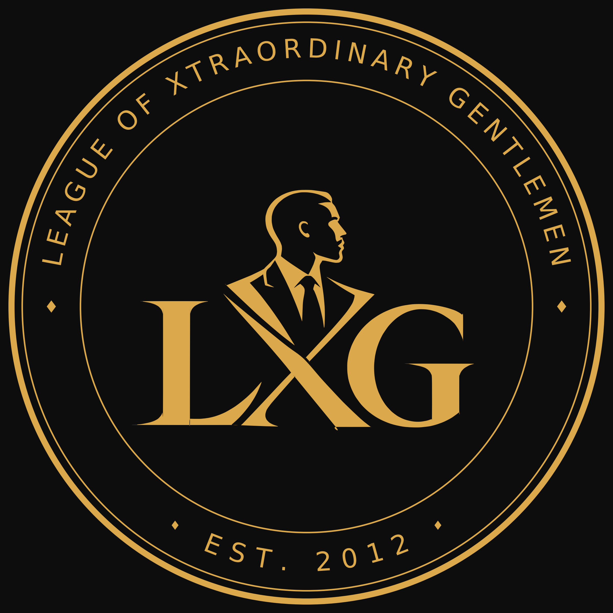

Our vision
To be a respected professional association that supports its members’ development and contributes to business and society in Ghana and beyond.

LEAGUE OFEST. 2012 / BONO, GHANA
LXG is an association of executives and professionals with a shared history of working for MTN in Ghana’s Bono Region. Established in 2012, the association maintains professional relationships among members in Ghana and abroad.
View member profilesAbout LXG01 / ABOUT LXG
LXG was founded in 2012 by approximately 15 MTN staff and contractors who had worked in the Bono Region of Ghana.
The association was established to bring former colleagues together and maintain the professional and personal relationships developed during their work in the region.
Membership has since grown to approximately 25 executives and professionals working in digital innovation, marketing, sales, information technology, and engineering. Members are based in Ghana and abroad.
02 / PURPOSE
To be a respected professional association that supports its members’ development and contributes to business and society in Ghana and beyond.
To maintain strong relationships among LXG members, facilitate the exchange of professional knowledge, and support collaboration, mentorship, and community initiatives.
Maintain regular contact among members and provide a forum for professional engagement and mutual support.
Enable members to identify and pursue joint projects and business opportunities across their areas of expertise.
Provide opportunities for members to share experience, discuss industry developments, and strengthen their professional skills.
Support emerging professionals through career guidance and structured mentoring.
Maintain the participation of members living abroad and facilitate collaboration with members in Ghana.
Undertake community initiatives with defined outcomes and recognize members’ professional achievements and service.
03 / MEMBERSHIP
Professional experience, areas of expertise, and selected activities of LXG members.
04 / ACHIEVEMENTS
This section will document members’ professional accomplishments and activities undertaken by LXG.
Details of awards, career appointments, completed projects, and association initiatives will be published after verification.
No achievements published yet05 / EVENTS
13–14 November 2026 · Adi Lake Resort, Akosombo, Eastern Region
13–14 NOVEMBER 2026
Venue: Adi Lake Resort, Akosombo, Eastern Region
| Time | Programme |
|---|---|
| 5:00 PM | Arrival & Check-in |
| 7:00 PM | Welcome Address LOC Chairman |
| Following welcome | Dinner Buffet & Introductions |
| 8:00 PM | Breakout Groups & Games |
| 9:00 PM | Work Stream Discussions & Presentations |
| 10:00 PM | Closing Remarks Summary of resolutions & action owners — Senior LXG Member Vote of thanks — Senior LXG Member |
| Time | Programme |
|---|---|
| 8:00 AM | Breakfast |
| 10:00 AM | Boat Riding, Jet Skiing & Golf |
| After activities | Group Pictures |
| 1:00 PM | Departure |